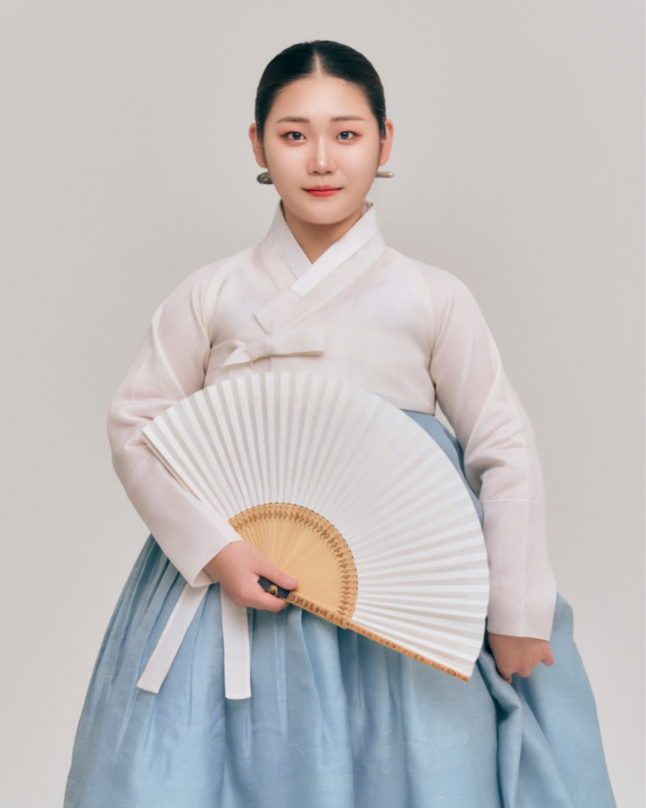

Kim Song
소리마당 밴쿠버
Sori Madang Vancouver
한국 전통 음악 & 판소리 클래스
Korean Traditional Music & Pansori Classes
목소리 하나로 이야기를 전하는 예술.
판소리는 한국의 전통 음악으로, 노래와 이야기, 감정을 함께 표현하는 독특한 공연 예술입니다.
음악을 처음 배우는 분도, 한국 문화에 관심 있는 분도 모두 환영합니다.
An art form that tells stories through a single voice.
Pansori is a traditional Korean performing art that combines singing, storytelling, and emotional expression into one unique musical experience.
Whether you are completely new to music or simply interested in Korean culture, everyone is welcome.
판소리란?
What is Pansori?
판소리는 한 명의 소리꾼과 한 명의 고수가 함께 만들어가는 한국의 전통 공연 예술입니다.
소리(노래), 아니리(말), 발림(몸짓)이 어우러져 하나의 긴 이야기를 들려주며,
북장단과 관객의 추임새가 더해져 매 공연마다 살아있는 무대가 완성됩니다.
2003년, 판소리는 유네스코 인류무형문화유산으로 등재되어 세계적으로 그 가치를 인정받았습니다.
Pansori is a traditional Korean performing art created through the collaboration of one singer (sorikkun) and one drummer (gosu).
It combines singing, spoken narration, expressive gestures, rhythmic drumming, and audience participation to tell a complete story in a uniquely immersive way.
Recognized by UNESCO as an Intangible Cultural Heritage of Humanity in 2003, Pansori is celebrated worldwide as one of Korea's most treasured performing arts.
판소리의 매력
Why Pansori is Special
- 노래와 이야기가 하나가 되는 예술
- A unique blend of music and storytelling
- 다양한 장단이 만들어내는 풍부한 리듬
- Rich rhythmic patterns that shape each performance
- 몸짓과 표정으로 전하는 생생한 표현
- Expressive movement and emotional delivery
- 관객과 함께 완성되는 공연
- A performance completed together with the audience
강사 소개
About the Instructor
김송 강사는 초등학교 시절부터 판소리를 배우기 시작해 현재까지 꾸준히 전통 소리를 이어오며,
한국 전통 소리의 깊이와 매력을 익혀왔습니다.
한국에서는 초등학생들에게 판소리를 지도하며, 아이들이 우리 전통문화를 자연스럽게 배우고 즐길 수 있도록 함께했습니다. 그 시간을 통해 판소리는 단순히 배우는 예술을 넘어, 사람과 사람을 연결하고 마음을 나누는 소중한 문화임을 느끼게 되었습니다.
이제 그 경험을 바탕으로 밴쿠버에서도 더 많은 분들과 판소리의 아름다움과 즐거움을 함께 나누고자 합니다. 어린이부터 성인까지, 처음 시작하는 분들도 편안하게 판소리를 접하고 배울 수 있는 수업을 만들어가겠습니다.
Kim Song has studied Pansori since elementary school and has continued practicing traditional Korean vocal arts ever since, developing a deep appreciation for its artistry and cultural significance.
In Korea, she taught Pansori to elementary school students, helping children discover and enjoy Korean traditional culture through music. Through that experience, she came to believe that Pansori is more than a performing art—it is a meaningful way to connect people and share stories across generations.
Now in Vancouver, she hopes to share the beauty and joy of Pansori with more people, creating a welcoming environment where both children and adults can comfortably begin their journey into Korean traditional music.
학력
Education
- 국립전통예술고등학교 졸업
- Graduated from National Traditional Arts High School
- 전북대학교 한국음악과 석사과정
- Master's Program, Department of Korean Traditional Music, Jeonbuk National University
수상 경력
Awards
- 금상 — 창원야철전국국악경연대회
- Gold Prize — Changwon Yacheol National Gugak Competition
- 대상 — 진도전국국악경연대회
- Grand Prize — Jindo National Traditional Music Competition
- 대상 — 제5회 낙안읍성 전국국악경연대회 (학생부)
- Grand Prize — 5th Naganeupseong National Gugak Competition (Student Division)
주요 활동
Major Activities
- 흥보가 완창 발표회
- Complete performance of Heungboga
- 대전 판소리 고법 흥보가 발표회 초청 명창
- Invited Master Singer at Daejeon Pansori Gobeop Heungboga Concert
- 합천 대평 군물 농악 (MC 및 소리)
- Hapcheon Daepyeong Gunmul Nongak (MC & Singer)
- 2024 IPEA Percussion Elite Performance
- 2024 IPEA Percussion Elite Performance
자격증
Certification
- 국악교육사 자격증
- Certified Korean Traditional Music Educator
무엇을 배우나요?
What Will You Learn?
소리
Pansori Singing
판소리의 기본 발성, 호흡, 소리 표현 방법을 배웁니다.
Learn the foundations of Pansori singing, including vocal technique, breathing, and expressive voice production.
장단
Traditional Rhythm
전통 리듬 구조를 이해하고, 장단에 맞춰 소리하는 법을 익힙니다.
Understand traditional Korean rhythmic patterns and learn how to sing naturally within them.
창과 아니리
Storytelling & Expression
노래와 말로 이야기를 전달하는 판소리의 표현 방식을 배웁니다.
Learn how Pansori blends singing and spoken narration to tell engaging stories.
추임새
Audience Interaction
관객과 함께 만들어가는 판소리만의 소통 방식을 경험합니다.
Experience Chuimsae—the unique audience responses that make every Pansori performance a shared experience.
학습 과정
Learning Journey
판소리의 기본이 되는 소리와 호흡을 익히기 위해 먼저 한국 민요를 배우고, 이후 판소리의 대표적인 대목을 통해 이야기와 표현을 확장해 나갑니다.
Students begin with traditional Korean folk songs to build vocal technique, breathing, rhythm, and musical expression before progressing to iconic scenes from Pansori.
한국 민요 배우기
Traditional Korean Folk Songs
- 너영나영Neoyeong Nayeong
- 진도 아리랑Jindo Arirang
- 동백 타령Dongbaek Taryeong
- 동해 바다Donghae Bada
판소리 대목 배우기
Pansori Arias & Scenes
- 춘향가 – 사랑가Chunhyangga – Sarangga (Love Song)
- 흥보가 – 돈타령Heungboga – Dontaryeong (Song of Money)
- 심청가 – 아버지 듣조시오Simcheongga – Abeoji Deutjosio (Please Listen, Father)
- 수궁가 – 토끼 화상 그리는 대목Sugungga – Tokki Hwasang Geurineun Daemok (Drawing the Rabbit's Portrait)
* 학습 곡과 진행 속도는 학생의 경험, 관심 분야, 목표에 따라 맞춤 조정됩니다.
* Lessons are tailored to each student's experience, interests, and personal learning goals.
오픈 이벤트
Opening Event
밴쿠버에서 판소리 클래스를 새롭게 시작하며, 첫 만남을 기념하여 무료 체험 수업을 진행합니다.
총 10명 한정으로 진행되며, 각 수강생에게 맞춘 집중적인 수업을 위해 개인 레슨 형태로 운영됩니다.
판소리를 처음 접하는 분들도 부담 없이 참여하실 수 있습니다. 소리, 장단, 이야기로 이루어진 한국 전통 판소리의 매력을 직접 경험해보세요.
참여 인원이 제한되어 있어 사전 예약을 부탁드립니다.
To celebrate the launch of our Pansori classes in Vancouver, we are offering complimentary introductory lessons.
The event is limited to 10 participants and will be conducted as personalized one-on-one lessons to provide focused instruction.
Whether you're completely new to Pansori or simply curious about Korean traditional music, you're warmly invited to experience its beauty through singing, rhythm, and storytelling.
Advance reservation is required due to limited availability.
일정 및 장소
Schedule & Location
대상
Target
어린이부터 성인까지
경험 무관
Children and adults
No previous experience required.
레슨 형식
Lesson Format
개인 또는 소그룹 레슨 (1:1–1:3)
Private or small-group lessons (1:1–1:3)
일정
Schedule
각 수강생과 개별적으로 조율하여 진행됩니다.
Arranged individually with each student.
장소
Location
밴쿠버 내 위치한 연습실에서 진행됩니다.
정확한 위치는 예약 확정 후 안내해 드립니다.
Lessons are held in a comfortable practice space within Vancouver.
The exact location will be provided after reservation confirmation.
문의하기
Contact
수업에 관심이 있으시거나 궁금한 점이 있다면 언제든 편하게 연락해 주세요.
If you are interested in joining or have any questions, please feel free to reach out.